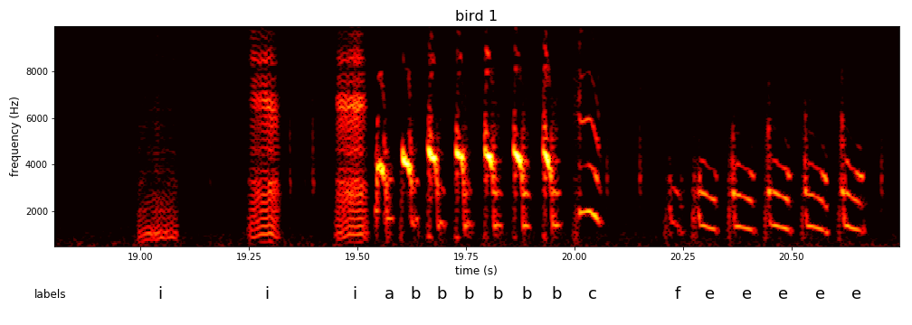
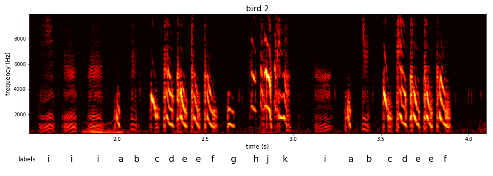
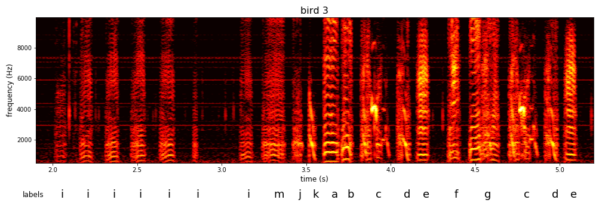
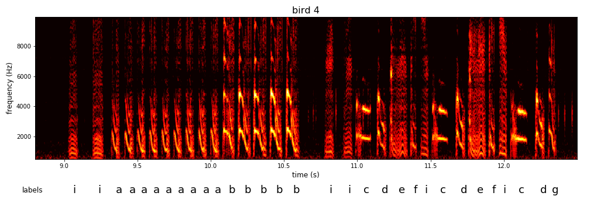
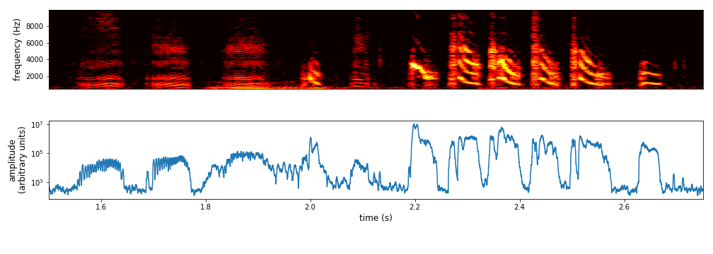
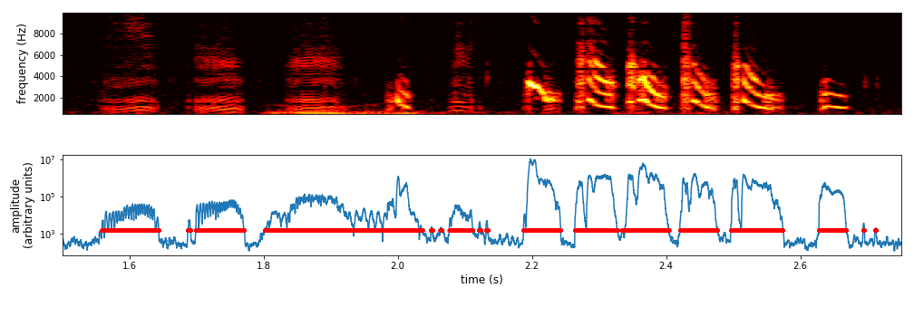
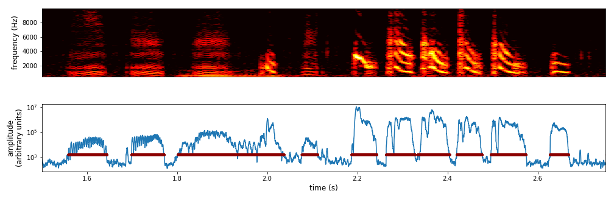
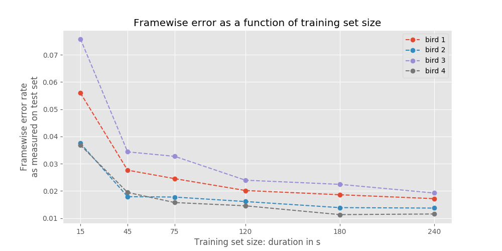
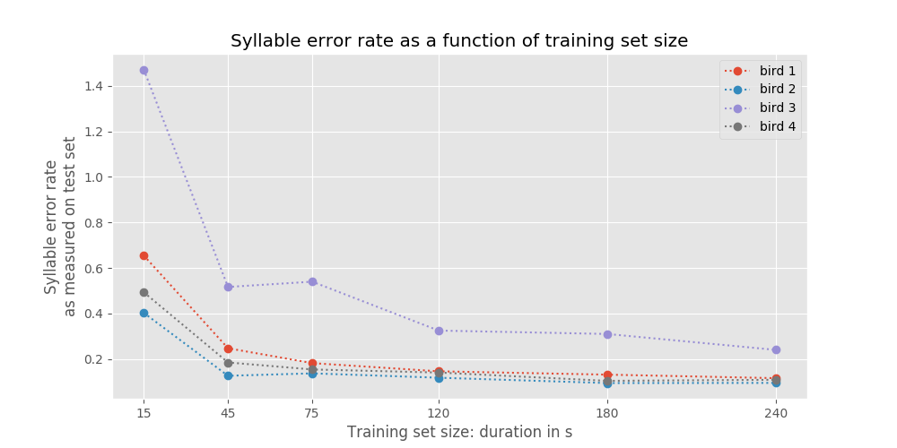

Introduction
In November, Yarden Cohen and I gave a talk at PyData NYC
about segmenting vocalizations with neural networks. We are segmenting birdsong
into elements called syllables, although in principle the same thing can be done with human speech.
That is a harder problem, though, because in human speech
the beginning and end of a syllable is not as clearly defined
as it is in birdsong. Because the song of many bird species is more easily
segmented into syllables, we proposed that birdsong could provide a test bed for
benchmarking different neural net models for segmentation.
We have some scientific questions about birdsong that we are using the neural
network to answer. I won't go into the details of that here, but I thought it
might be interesting for people to see the process we're going through to make
sure the network does what we want it to. I find a lot of tutorials on the web
that walk users through applying an established architecture to a toy problem,
but not a lot of writing about the process of developing a neural network for a
specific real-world application. So here's a sneak peek at the results I've been
sending to Yarden. Full disclosure: I'm also applying for the
Google AI Residency and want to demonstrate what I've been working on.
the goal: segment birdsong into syllables
As I said, we are trying to segment birdsong into syllables.
Let's look at some examples to see what I mean.
Below are spectrograms of four songs from four birds, taken from an
open repository of Bengalese finch song
shared by the lab that I work in,
[]the Sober lab](https://scholarblogs.emory.edu/soberlab/).
If you haven't seen a spectrogram before, it is (in this context) just a way to
convert audio into an image, with frequencies on the Y axis and time on the X axis.
Notice that each bird has a handful of repeating elements in its song
that we call syllables. Often when we want to study a birds' song, we
name these elements by giving them labels. The labels are mostly arbitrary:
just because one syllable is labeled 'a' for bird 1 does not mean that it
resembles syllable 'a' from bird 2. All these birds are from the same species
but each individual has its own song. (Typically a bird's adult song
resembles the song of the tutor that it learned from as a juvenile.)




how birdsong is typically segmented
Typically, scientists that study birdsong segment it into syllables with a simple algorithm:
- measure the amplitude of the sound

- set a threshold and find all time points at which the amplitude is above that threshold.
Call each continuous series of time points above threshold a syllable segment (pink);
each series below the threshold is a silent period segment
- set a minimum silent period duration; if the duration of any silent period segments are
less than that minimum, they are removed and the two syllable segments that were on either
side of it are joined (red).
- set a minimum syllable duration, if any syllable segments are less than that minimum,
they are discarded. The remaining syllable segments (dark red) are then given labels.


For many species of songbird, this algorithm works fine.
But if there is background noise, this algorithm can fail--e.g. if recording
birds in the wild or during a behavioral experiment where there are other sounds.
This algorithm also won't work for species that have elements of their song not
easily segmented into syllables by simply finding
where the amplitude crosses some threshold.
Network architecture: hybrid convolutional and bidirecitonal LSTM (CNN-biLSTM)
So we would like some machine learning magic to segment song for us, in a way that
is robust to noise. Neural networks may not be the only algorithm that can do this,
but they are definitely one of the first that come to mind. As I'll talk about in
the discussion, there are several neural network architectures that could be applied
to segmenting song. The approach that Yarden developed combines convolutional layers,
which are typically used for image recognition, with recurrent layers, which are
supposed to be able to capture dependencies across time.
schematic
As an input, it takes spectrograms, and then it outputs a class label
for each time bin in the spectrogram.
This implicitly gives us segmentation, because we find each continuous series
of one label and call that a segment.
It is based on similar architectures described in these papers:
You could also think of this as a generalization of
the hybrid deep neural networks-hidden Markov Model approach.
Error metrics: how do you know if you're doing a good job of segmenting?
There's a couple of error metrics we've been using.
The first I'll call frame error rate, taking a cue from
Alex Graves.
As you might guess from the name, this metric looks at the label for
every frame, i.e. every time bin, and asks whether it is correct.
The metric gives you a sense of how well you're doing overall: if you
have very low error you can assume you are correctly finding the right
segments. But when you get some frames wrong, this metric does not tell
you much about where you are getting things wrong.
So on top of that metric which Yarden and I looked at initially, I have
implemented the syllable error rate, by analogy with the
word error rate
often used for speech recognition.
The syllable error rate is a normalized edit distance between the sequence
of labels given to syllables in a song by a human annotator
and the sequence predicted by a machine learning algorithm.
I am specifically using the Levenshtein edit distance which is the
number of insertions, deletions, and substitutions required to convert
the predicted labels into the actual labels from the ground truth set.
This distance is normalized by dividing it by the number of syllables in the
ground truth set. The normalization makes it possible to compare across
training sets of different sizes, e.g., if one bird sings
many more syllable types than another.
Learning curves
To measure performance of the CNN-biLSTM, we're looking at learning curves,
which are simply plots of error as a function of training set size.
You might be familiar with learning curves from their typical use within
a supervised learning context: to evaluate whether the classifier you're using
is underfitting the training data due to its high bias, or overfitting due to high variance.
The reason we're plotting learning curves is to give someone studying songbirds an idea of how much training data they will need labeled by hand to achieve the desired accuracy in terms of segmentation and classification. It is more informative to see the accuracy across a range of training set sizes, rather than just one or two.
Another reason to generate learning curves is an interesting use case, as proposed by Cortes et al. 1994:
to estimate which of two models will give better accuracy without actually training both models on a very large data set, which would be computationally expensive. This is done by measuring the accuracy for a range of smaller training data sets, and then fitting a curve to those accuracies. The parameters of the fit curve include the asymptote, which you can think of as the accuracy given infinite training data. You can then use points on the fit curve line to predict which model will do better when trained with the very large data set. Some of my analysis below makes use of such fit curves.
Results
Framewise error rate suggests the network learns to accurately classify each time bin

The syllable error rate shows that this results in accurate segmentation

The network can learn long-term dependcies error decreases exponentially as a function of the number of time steps
Discussion